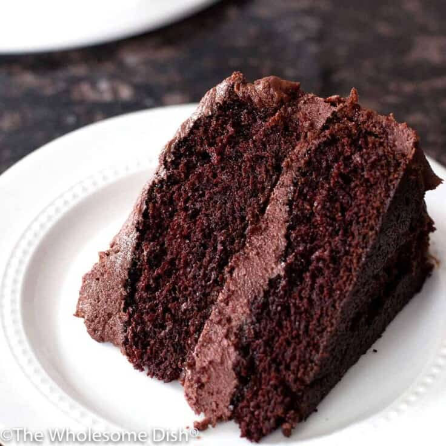

Azzy's Recipes
Chocolate Cake

Description
This moist, rich, and slightly tangy chocolate cake is sure to wow your
guests and be the delicious cherry on top of an excellent dinner!
Ingredients
For the cake:
- 2 cups of granulated sugar
- 1 3/4 cups of all purpose flour
-
3/4 cup of unsweetened cocoa powder (naturally processed, like
Hershey's)
- 1 1/2 teaspoons of baking soda
- 1 1/2 teaspoons of baking powder
- 1 teaspoon of salt
- 1 cup of buttermilk well shaken (full-fat if you can find it)
- 1/2 cup of canola oil
- 2 large eggs
- 2 teaspoons of vanilla extract
- 1 cup of hot water (does not need to be boiling)
For the frosting:
- 16 tablespoons of unsalted butter, at room temperature (2 sticks)
-
1 cup of unsweetened cocoa powder (naturally processed, like Hershey's)
- 1 teaspoon of vanilla extract
- 1/4 teaspoon of salt
- 8 ounces of cream cheese, at room temperature
- 4 cups of powdered sugar
Directions
Make the cake:
- Preheat oven to 350°F.
- Butter and lightly flour two 9-inch round cake pans.
-
In a large bowl, add the sugar, flour, cocoa powder, baking soda, baking
powder, and salt. Stir to combine.
-
Add the buttermilk, canola oil, eggs, and vanilla. Use an electric mixer
to beat on medium speed for two minutes.
-
Add the hot water to the cake batter. Mix on medium speed until well
combined (the batter will be runny).
-
Divide the batter between the two cake pans. Gently tap the pans on the
countertop to release some of the air bubbles in the batter.
-
Bake on a center oven rack for 32 to 34 minutes. A toothpick inserted
into the center of the cake should come out with moist crumbs, but no
raw batter on it. Test the cake for doneness at 32 minutes, even if it
looks like the center needs to rise more.
-
Cool for 15 minutes. Remove the cakes from the pans. Place the cakes on
wire cooling racks until they have cooled completely (around 2 hours).
Make the frosting:
-
Add the butter to a medium size sauce pot and place over medium-low
heat. Heat until the butter has just melted. Remove the pot from the
heat.
-
Add the cocoa powder, vanilla, and salt to the butter. Stir until the
cocoa is smooth.
-
In a large bowl, add the room temperature cream cheese. Whisk with an
electric mixer on medium speed until fluffy (about 2 minutes).
- Add half of the powdered sugar. Beat until combined.
- Add half of the chocolate butter. Beat until combined.
-
Repeat, alternating with the remaining powdered sugar and chocolate
butter.
-
Scrape down the sides of the bowl. Beat on medium-high speed for two
minutes, until fluffy.
Frost the cake:
-
Place one of the cooled cake rounds on a cake plate. Add about ⅓ of the
frosting. Spread evenly over the top of the cake.
-
Top with the second cake round. Add ⅓ of the frosting. Spread evenly
over the top of the cake.
-
Use the remaining ⅓ of the frosting to cover the sides of the cake.